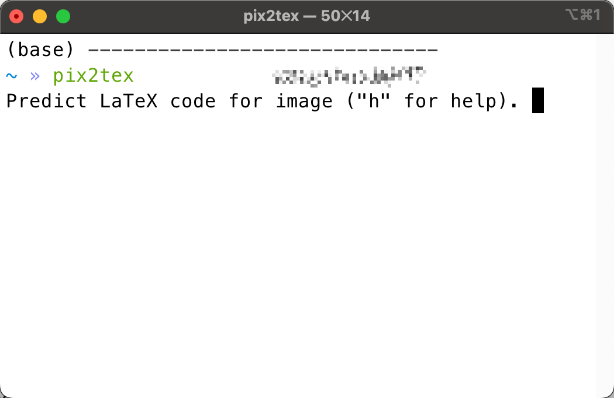
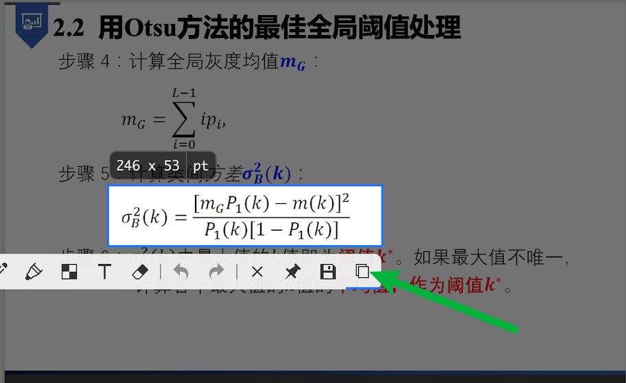
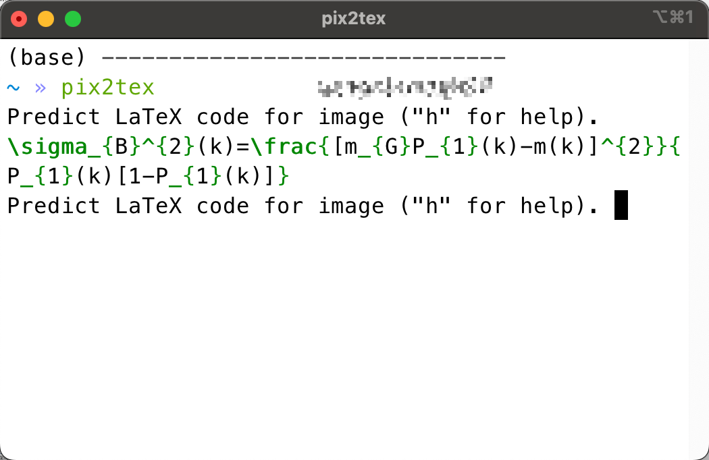
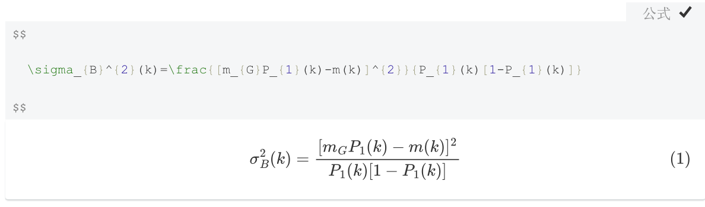

前言
之前在网上找到一个公式OCR工具：mathpix非常好用，而且每个月100个免费识别的额度足够日常使用了。但最近写份作业，发现没识别几个公式额度就满了？查看账户发现mathpix免费额度变成了10 Snips per month？
并且其订阅费用每月4.99$不算便宜，然后就在GitHub上简单找了一下，看有没有开源的公式OCR软件。
果不其然，Latex-OCR1，（pix2tex: Using a ViT to convert images of equations into LaTeX code）.十分好用，基本可以替代mathpix70%的功能。印刷版的公式识别基本没有错误，手写的识别准确率有待提高，最重要的，这个pix2tex是部署在本地的，随时可用，不用担心以后变成付费软件。
pix2tex介绍


The goal of this project is to create a learning based system that takes an image of a math formula and returns corresponding LaTeX code.

安装
直接在终端输入：
pip install pix2tex
即可。
当然，前提是你需要一些基础环境：
基础使用:
打开一个终端；
输入
pix2tex，回车；
此时就可以开始使用了。
截图并复制到剪切板
在终端页面回车即可返回OCR识别的结果，是以Latex格式输出
将以上输出结果复制到markdown、latex或者word3都可直接识别出公式
公式： $$ \sigma_{B}^{2}(k)=\frac{[m_{G}P_{1}(k)-m(k)]^{2}}{P_{1}(k)[1-P_{1}(k)]} $$
其他使用方法
Thanks to @katie-lim, you can use a nice user interface as a quick way to get the model prediction. Just call the GUI with
latexocr. From here you can take a screenshot and the predicted latex code is rendered using MathJax and copied to your clipboard.Under linux, it is possible to use the GUI with
gnome-screenshotwhich comes with multiple monitor support ifgnome-screenshotwas installed beforehand.
If the model is unsure about the what’s in the image it might output a different prediction every time you click “Retry”. With the
temperatureparameter you can control this behavior (low temperature will produce the same result).You can use an API. This has additional dependencies. Install via
pip install -U pix2tex[api]and runpython -m pix2tex.api.runto start a Streamlit demo that connects to the API at port 8502. There is also a docker image available for the API: https://hub.docker.com/r/lukasblecher/pix2tex
docker pull lukasblecher/pix2tex:api docker run --rm -p 8502:8502 lukasblecher/pix2tex:apiTo also run the streamlit demo run
docker run --rm -it -p 8501:8501 --entrypoint python lukasblecher/pix2tex:api pix2tex/api/run.pyand navigate to http://localhost:8501/
Use from within Python
from PIL import Image from pix2tex.cli import LatexOCR img = Image.open('path/to/image.png') model = LatexOCR() print(model(img))The model works best with images of smaller resolution. That’s why I added a preprocessing step where another neural network predicts the optimal resolution of the input image. This model will automatically resize the custom image to best resemble the training data and thus increase performance of images found in the wild. Still it’s not perfect and might not be able to handle huge images optimally, so don’t zoom in all the way before taking a picture.
Always double check the result carefully. You can try to redo the prediction with an other resolution if the answer was wrong.
Want to use the package?
I’m trying to compile a documentation right now.
Visit here: https://pix2tex.readthedocs.io/
其他
Training the model
···
···
结束🔚。